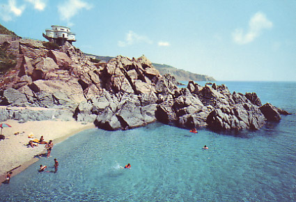
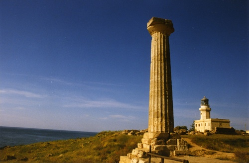
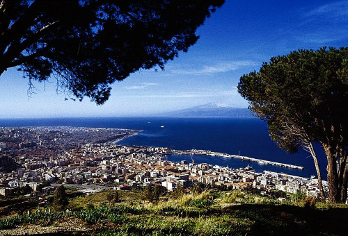
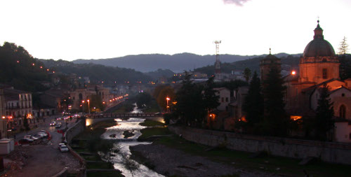
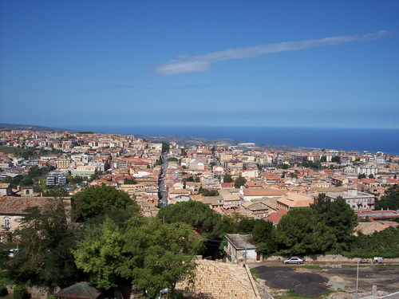

LA POPOLAZIONE
|  |
 |
| Spiaggia a Catanzaro |
Tempio di Hera Lacinia vicino a Crotone |
Catanzaro è il capoluogo della Calabria, mentre la altre province sono Cosenza, Crotone, Reggio Calabria e Vibo Valentia. È una regione poco densamente popolata. Ci sono state molte emigrazioni a causa del territorio montuoso della regione che non favorisce la coltivazione delle terre e la costruzione di vie di comunicazione. La popolazione si concentra sulla costa dove ci sono le principali città. Nella regione sono presenti famiglie greche e albanesi. Le vie di comunicazione più importanti sono l'Autostrada A3 (Salerno-Reggio Calabria), la Ferrovia Jonica (Taranto-Reggio Calabria) il porto commerciale di Gioia Tauro, l'approdo di Villa San Giovanni, da cui partono i traghetti che attraversano lo Stretto di Messina e l'aeroporto di Reggio Calabria.
|  |
 |
 |
| Reggio Calabria di fronte alla Sicilia |
Cosenza |
Vibo Valentia |
Home Territorio Attività economiche Specialità Personaggi Storia Curiosità